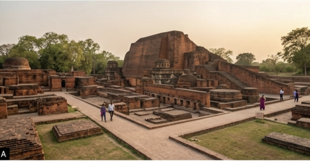

Just a short drive from the hustle of modern Bihar lies a sprawling complex of red-brick ruins that once served as the intellectual heartbeat of Asia. Nalanda Mahavihara, a UNESCO World Heritage site, isn’t just a collection of ancient walls; it’s a testament to a time when India was the global epicenter of logic, philosophy, and medicine
Walking through the excavated remains today, it’s easy to feel small. At its peak between the 5th and 12th centuries, Nalanda housed over 10,000 students and 2,000 teachersfrom as far as China, Korea, and Central Asia.
The Architecture of Genius
The ruins are laid out with a mathematical precision that would impress a modern urban planner. As you navigate the site, a few features stand out:
The Legend of the Dharma Gunj
History tells us that Nalanda’s library, known as Dharma Gunj (Mountain of Truth), was so vast that it comprised three multi-story buildings. Legend has it that when the university was attacked in the late 12th century, the library burned for six months. It’s a sobering thought, standing amidst the bricks, imagining the sheer volume of lost knowledge—manuscripts on astronomy, linguistics, and law that vanished into smoke.
A Modern Pilgrimage
Visiting Nalanda today is a quiet, contemplative experience. The manicured lawns and the stark contrast of the red bricks against the blue sky make it a photographer's dream.
Pro-Tips for visitors
Nalanda remains a powerful reminder that while empires may fall and buildings may crumble, the human pursuit of knowledge is indestructible. It’s more than a ruin—it’s a legacy.
page2